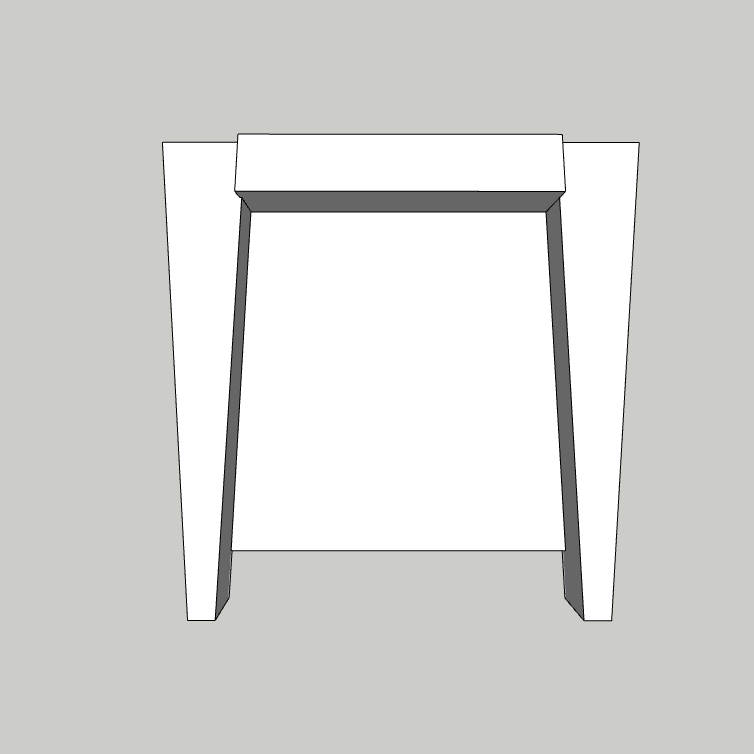
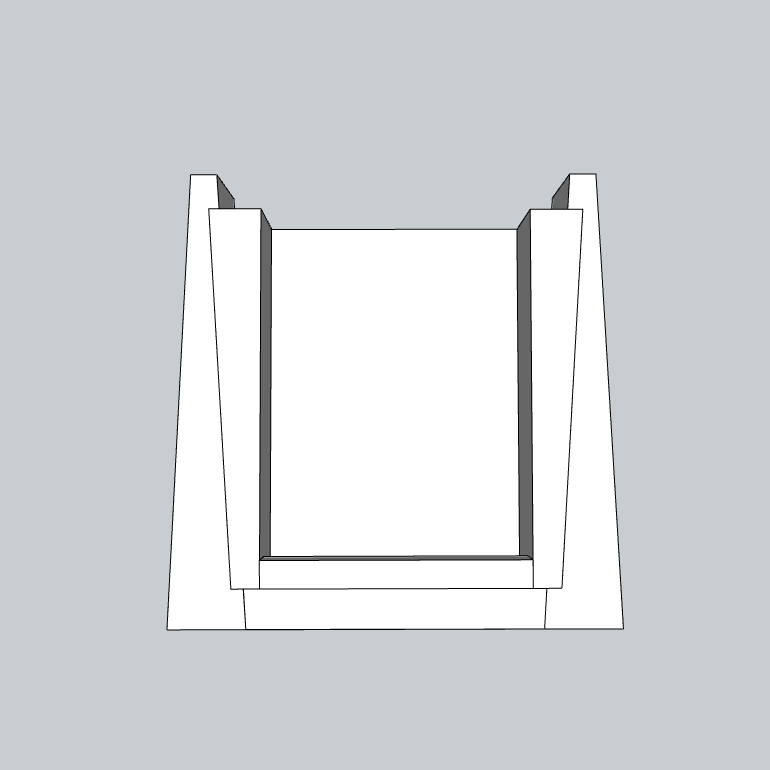
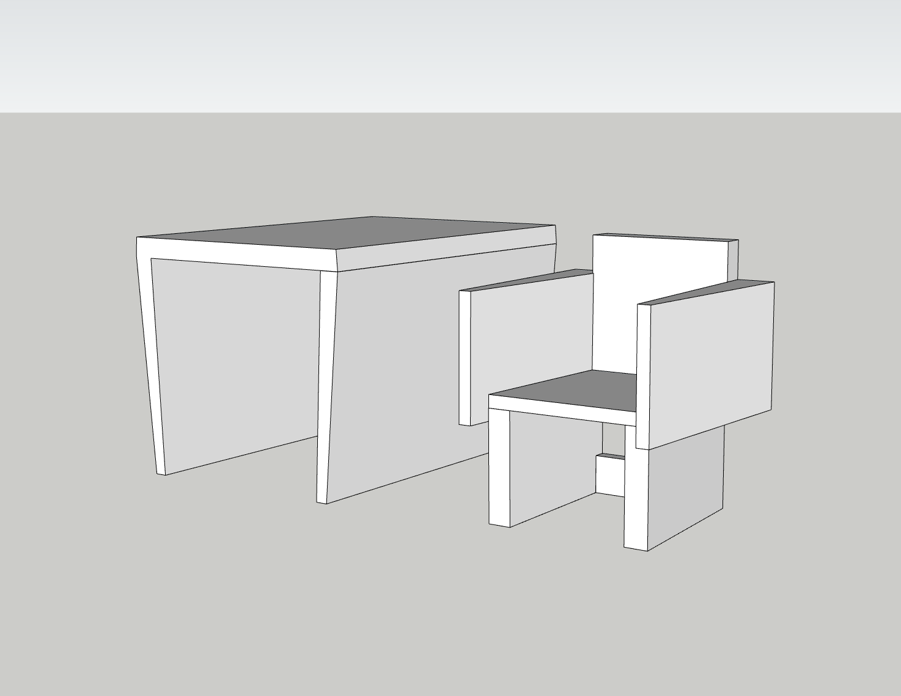

These chairs were designed around the notion of homotopy, or the continuous process of deformation of one shape into another. The base is a reflection of the top of the chair. These opposing faces furnish the coboundaries of the homotopy, and this intrinsic symmetry allows for tesselation-like stacking of the chairs; a single point traveling through an infinite stack of chairs traces out a helix in space.
This dining set was designed for small apartments; the chairs are easily stacked and stowed inside the table, and even function as a bookshelf while stowed. The trapezoidal base evokes the image of a dovetail joint, emphasized by the seamless marriage of stacked chairs. The intended construction material is unfinished birch. These pictures depict 3D-printed prototypes, to scale.


